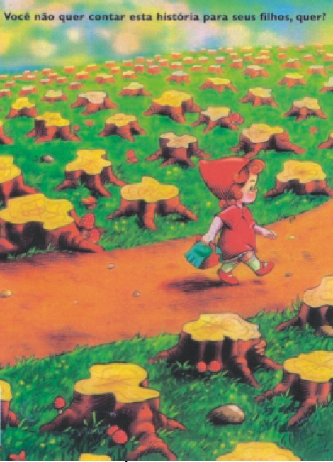

Revista Isto É Independente. São Paulo: Ed. Três [s.d.]
O alerta que a gravura acima pretende transmitir refere-se a
uma situação que
-
atinge circunstancialmente os habitantes da área rural do
País.
-
atinge, por sua gravidade, principalmente as crianças da
área rural.
-
preocupa no presente, com graves consequências para
o futuro.
-
preocupa no presente, sem possibilidade de ter consequências
no futuro.
-
preocupa, por sua gravidade, especialmente os que têm
filhos.